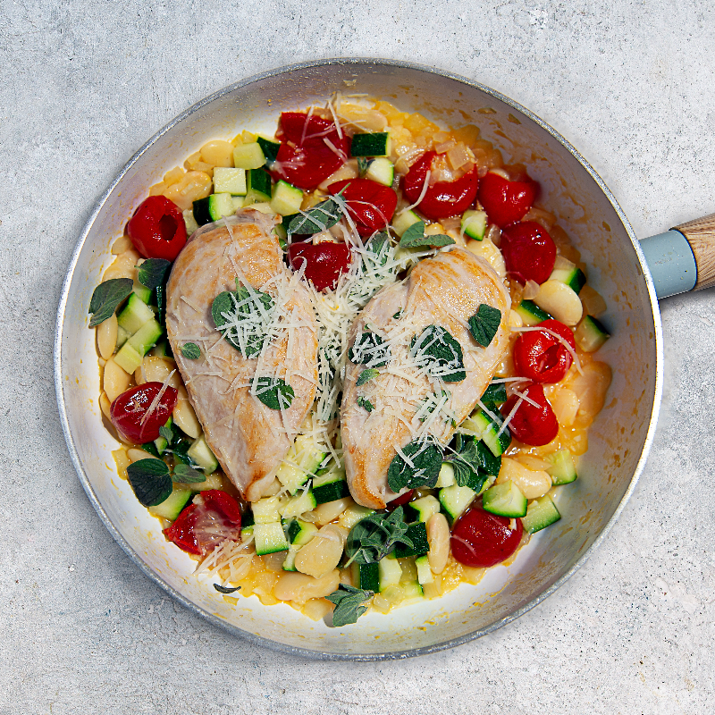

Worlds Best Pan Chicken

This chicken is called the world's best chicken because it definitely tastes the best in the world. Follow the directions
and you will be amazed:
Ingredients
- 2 chicken breasts
- 50ml olive oil
- 100ml vegetable stock or chicken stock
- 1 white onion diced
- 2 cloves of garlic crushed
- Sea salt
- 30g parmesean finely grated
Directions
- Season the chicken breasts with sea salt & a drizzle of olive oil
- Sear the chicken breasts in a non-stick pan over high heat until nicely browned then set to one side
- In the same pan add the remaining olive oil, garlic & onion & soften over low heat
- Add beans, peppers, marjoram & stock to the pan and bring to a simmer
- Add the chicken breasts then cover with a lid & gently cook until the chicken is fully cooked (around 12 minutes)
- For the final couple of minutes of cooking add the courgette
- To finish the sauce, add the Parmesan & season to taste
- Slice the chicken into thin strips & toss through the hot sauce